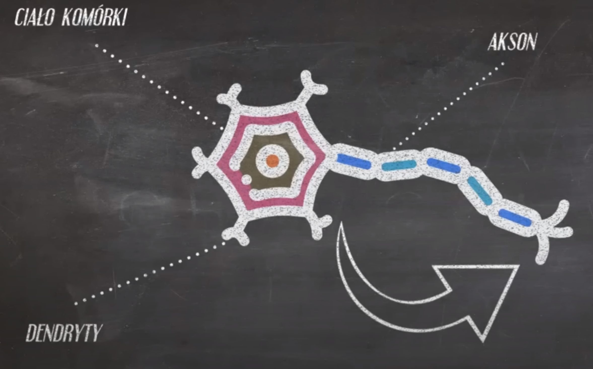

Komórki tworzą tkanki, tkanki łączą się z innymi tkankami i tworzą narządy,
zespół współpracujących narządów tworzy układ narządów, zaś układ narządów
tworzy organizm.
Tkanka - grupa podobnych, pełniących określone funckje na rzecz całego organizmu.
Tkanka nabłonkowa - jej główna funckja to ochrona, komórki do siebie przylegają i tworzą wartswy ochronne.
Tkanka łączna - szeroka grupa tkanek, dzieląca się na tkankę łączną właściwą, chrzęstną, kostną, tłuszczową oraz krew.
Charakteryzuje się luźnym ułożeniem komórek oraz duża ilością substancji międzykomórkowej.
Tkanka łączna właściwa - dzieli się na siateczkową, włóknistą luźną, włóknistą zbitą. Stanowi rusztowanie dla innych tkanek.
Tkanka łączna kostna - posiada dwie grupy substancji zapewniająych odpowiednie cechy. Owe grupy to grupa nieorganiczna
(substancję mineralne) oraz grupa organiczna (białka). Sprawia iż kości są mocne i wytrzymałe, a zarazem elastyczne.
Komórki kostne (osteocyty) leżą w zagłębieniu substancji międzykomórkowej, tzw. JAMKI. Osteon to podstawowa jednostka
struktury kości.
Tkanka łączna chrzęstna - ma luźno ułożone komórki, zawiera dużo substancji międzykomórkowej, leży w jamkach. Tkanka chrzęstna
jest odporna na ścieranie oraz rozciąganie, występuje w małżowinie usznej, pokrywa powierzchnie stawów, stanowi połączenie kręgów
w kręgosłupie oraz żeber z mostkiem.
Tkanka podporowa - kiedy tkankę łączną kostną oraz tkankę łączną chrzęstną wrzucamy do jednego worka, powstaje wówczas owa tkanka,
czyli tzw. tkanka podporowa.
Tkanka łączna tłuszczowa - podział na żółtą (zazwyczaj mają jedną dużą kroplę tłuszczu) oraz brunatno żółtą (cecha zwierząt hibernujących, składa się na mniejsze krople tłuszczu), występuje u zwierząt
pod skórą, otacza narządy wewnętrzne. Pełni funkcję ochronną, izolacyjną.
Komórki tłuszczowe - ADIPOCYTY
Tkanka łączna płynna (krew) - odpowiada za transport, odporność oraz termoregulację. Posiada trzy rodzaje składników posiadających postacie (elementy morfotyczne): erytrocyty, leukocyty, trombocyty.
Elementy morfotyczne zawierają hemoglobinę, a ich główną funckją jest transport tlenu. Główną funkcją leukocytów to odporność. Trombocyty uczestniczą w krzepnięciu krwi.
Tkanka mięśniowa - zbudowana z włókien mięśniowych, mają zdolność uczenia się co wpływa na możliwość ruchu oraz transportu organizmu. Dzieli się na 3 rodzaje: Tkanka mięśniowa poprzecznie prączkowana
szkieletowa (budująca mięśnie szkieletowe, występuje w niej aktyna oraz miozyna), poprzecznie prążkowana serca (jej komórki rozgałęziają się na końcach, mają tylko jedno bądź dwa jądra komórkowe),
tkanka mięśniowa gładka (nie posiada prążków, buduje ściany naczyń krwionośnych narządów wewnętrznych, posiada kształt wrzecionowaty, posiadają jedno jądro komórkowe).
Tkanka nerwowa - w jej skład wchodzą komórki nerowe(odpowiadają za odbieranie, przetwrzanie oraz przekazywanie informacji) oraz komórki glejowe(wspomagają neurony, transportują dla nich substancję
odżywczę, izolują, regenerują oraz przśpieszają przepływ impulsu).
Kryteria podziału tkanek ze względu na:
- ilość warstw: jednowarstwowy lub wielowarstwowy
- kształt: płaski, sześcienny, walcowaty
- funkcje: pokrywające, wydzielnicze, transportujące, rozrodcze, ruchowe
Tkanka nerwowa:
